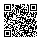

The power button wakes the phone straight to the meters, without unlocking it. Anyone who picks it up can see them and these settings.
Tap the clock to change brightness.
Install the bridge
Clawdmeter needs a small bridge program on each computer that runs Claude Code. On that computer, open this page and run the installer for its system.

Scan the code with another device, or type the address. Once the bridge runs, this phone finds the computer on the same Wi-Fi by itself.
About Clawdmeter
A phone version of Clawdmeter: Claude Code's session and weekly usage, and the computers and projects Claude is working on.
The code is under the Apache-2.0 license. Clawd, in the sprites and the app icon, is Anthropic's character; the sprites come from the original Clawdmeter. DejaVu Sans Mono is under the Bitstream Vera license.